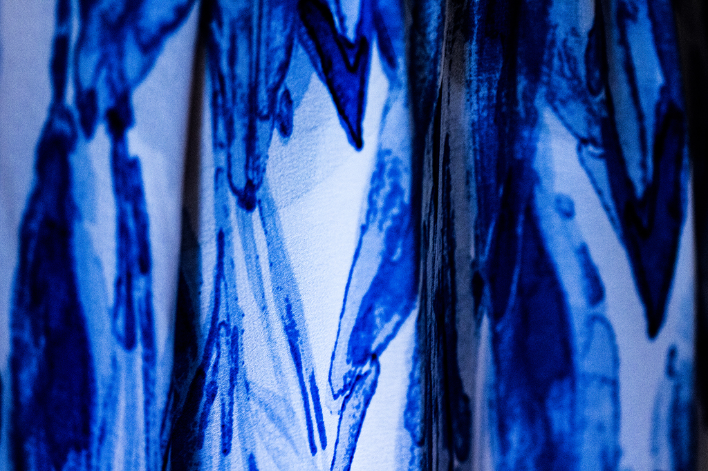
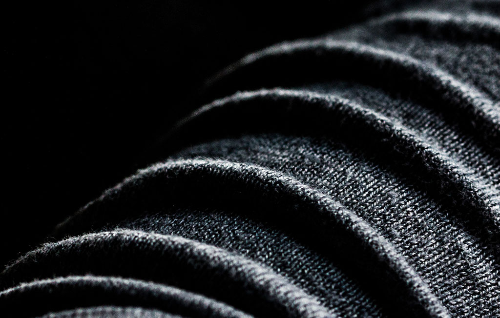
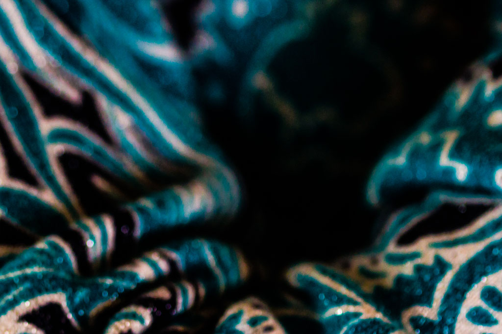
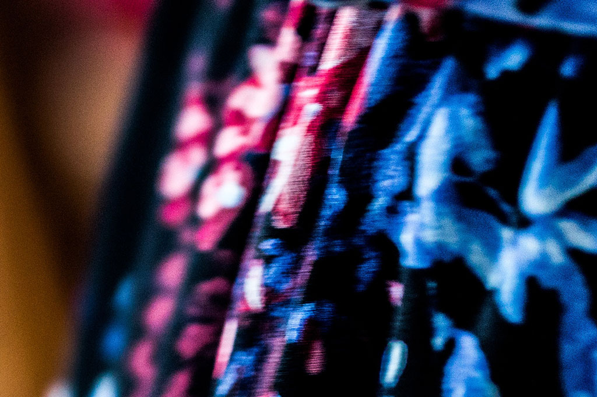
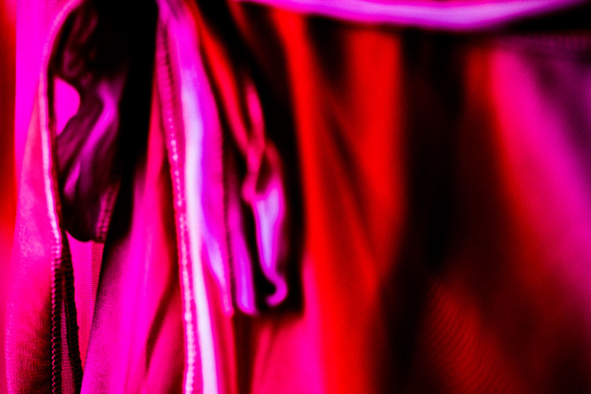

Familial Portrait Series
Spring 2017

An exploration of identity and relationship through clothing. An experiment in photographic technique to blur the boundaries of painting and photograph. In this series, I photographed my sister, mom, her sister, her sister's daughter, and my maternal grandmother.




